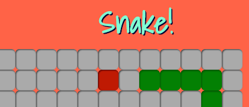

Projects Dodat A Trello clone. Built using Rails and Backbone.js. Includes account creation, session-management, custom-auth, jQuery drag/drop interaction, and more.Live | Github  Snake The arcade classic, re-born in pure Javascript. CSS dynamic-div display. jQuery key-binding. Use the arrow keys.Play | Github Rails Redux The 'V' and 'C' in Rails MVC pattern. Includes dynamic route generation, template rendering, session management, and more. Github Active Record Redux A lightweight clone of Rails ORM system. Full create/read/update/delete capabilities via SQL. Lots of metaprogramming. Github